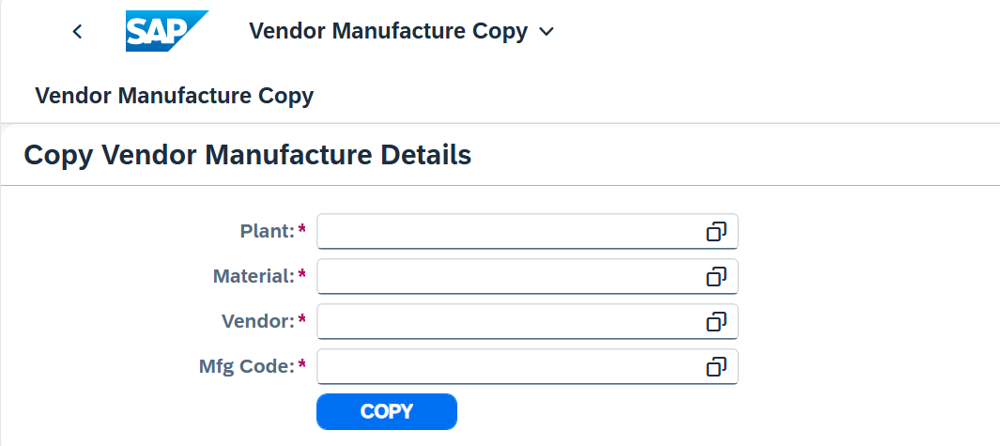
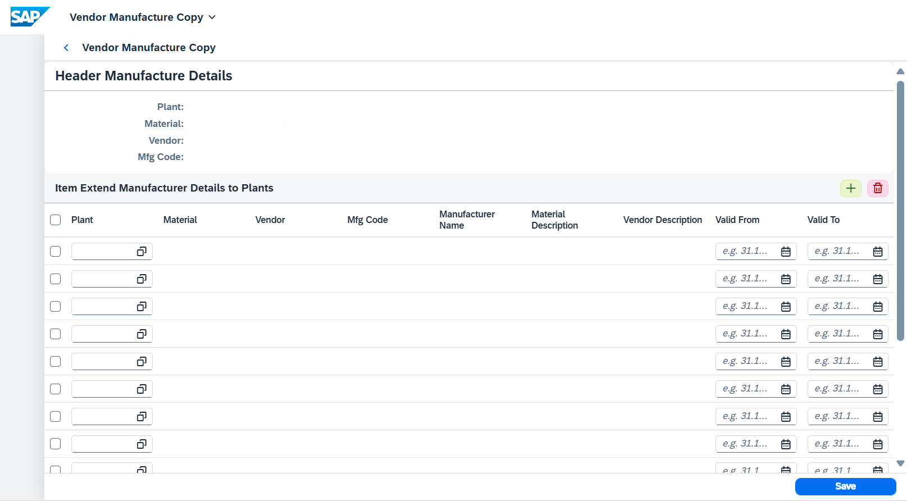
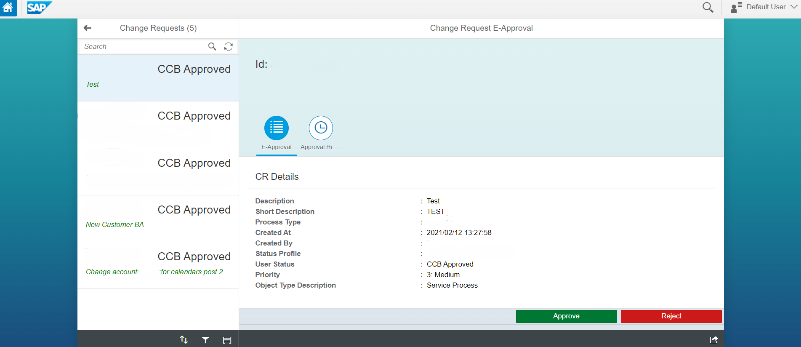
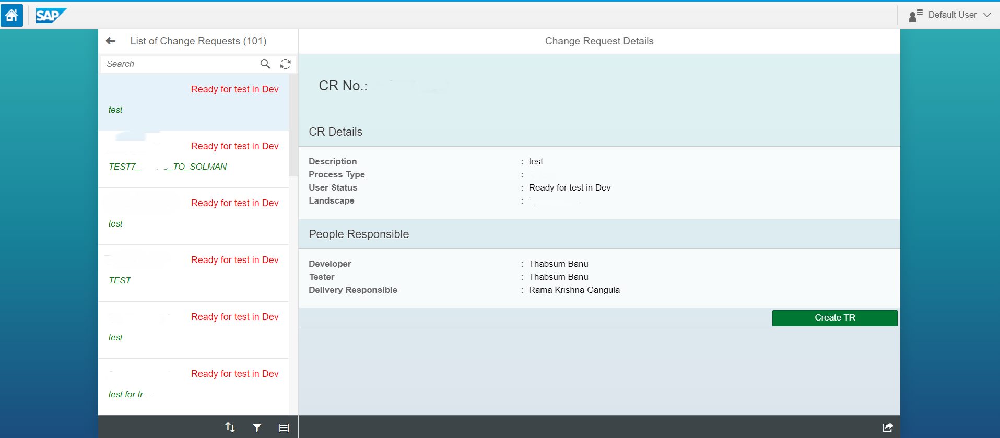

Vendor Manufacturer Copy
The Vendor Manufacturer Copy Fiori Application was developed to simplify and accelerate the process of extending manufacturing data across multiple plants.
The traditional method was manual, repetitive, and prone to human error, impacting efficiency.
The client required a smart, user-friendly interface that could automate repetitive steps and ensure data accuracy.
This application allows users to handle bulk entries effortlessly and intelligently reuses existing data to minimize input. Key functionalities such as value help, copy-paste support, auto-fill logic, dynamic row handling, validations, and batch save make the process seamless and reliable. Integrated directly into their Fiori environment, this app ensures consistency, reduces effort, and significantly boosts productivity.


Change Request Approval App
The Change Request Approval Fiori App streamlines the multi-level CR approval process within SAP Solution Manager by replacing manual, email-based workflows with a structured, digital interface. It supports three roles—Developer, Tester, and Delivery Responsible—offering role-sensitive UI, better governance, and real-time CR status visibility.
Features include role-based access, approval history, integrated email and SAP JAM collaboration, and status-driven UI behavior. The result is faster decision-making, fewer delays, and improved audit readiness—leading to enhanced transparency and user satisfaction.

Transport Request (TR) Creation App
The Transport Request Creation App simplifies the TR creation process as part of the CR lifecycle. With an intuitive interface, it allows users to search for CRs, view details, and initiate TR creation through a guided flow.
Users can select clients, specify request types (Workbench/Customizing), and assign developers via value help. Integrated validations and backend services reduce errors, eliminate SAP GUI dependency, and accelerate change processes—fully aligned with Fiori UX standards.
